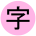

画0

映像の種類:
画0
画1
画2
画3
画4
画5
分割:
自動
分割なし
2分割
スピード:
遅い
普通
速い
不規則
音符ボタン:
(なし)
Horror
Hunting
Lonely
Longing
Lovely
Magic
Miracle
切り替え音:
なし
あり
(ここをタップして下さい)
催眠くらくら Version [[VERSION]]
本ソフトウェアは、催眠っぽい映像を楽しむアプリです。 動画ファイルを一切使わず、リアルタイムで催眠映像を生成します。 使い方はあなた次第。 ※ ソース: https://github.com/katahiromz/KraKra_ja_jp ※ 一部、OtoLogicの音声素材を使用。 ※ 改造はApache 2.0ライセンスの下で自由に行えます。 【使用上の注意】 - 本ソフトウェアはジョークアプリであり、動作は無保証です。 - てんかんの症状のある方は使用しないで下さい。 - あなたの国・学校・宗教・地域が催眠を禁じている場合は、本アプリを使用しないで下さい。 - 急性期の統合失調症患者は使用禁止です。 - 使用直後は、自動車の運転を避けて下さい。 - 集合体恐怖症の人は使用しないで下さい。 - 頭痛、吐き気、胃腸の不具合、異常な感情などの症状が生じた場合は、速やかに使用を中止し、専門医の診断を受けて下さい。 - 運営者は、本サービスの継続が困難となる事由が生じた場合、いつでも本サービスを終了することができるものとします。 【使い方】 - 基本的に画面を見て楽しむためのアプリです。 - 画面をタップ／クリックすると映像が切り替わります。 - 「画」ボタンで映像を選べます。 - 「マイク」ボタンでマイクが使えます。 - 「音符」ボタンで音が鳴ります。 - 「字」ボタンで表示するメッセージを設定できます。 - 「ふきだし」ボタンでメッセージを自動音声でしゃべります。 - 「歯車」ボタンで全般設定ができます。 Copyright (c) 2022 Katayama Hirofumi MZ Copyright (c) 2018 Robert Eisele Copyright (c) 2007-2022 Akshay Nair Copyright 2022 OpenJS Foundation and jQuery contributors. --- Apache License Version 2.0, January 2004 http://www.apache.org/licenses/ TERMS AND CONDITIONS FOR USE, REPRODUCTION, AND DISTRIBUTION 1. Definitions. "License" shall mean the terms and conditions for use, reproduction, and distribution as defined by Sections 1 through 9 of this document. "Licensor" shall mean the copyright owner or entity authorized by the copyright owner that is granting the License. "Legal Entity" shall mean the union of the acting entity and all other entities that control, are controlled by, or are under common control with that entity. For the purposes of this definition, "control" means (i) the power, direct or indirect, to cause the direction or management of such entity, whether by contract or otherwise, or (ii) ownership of fifty percent (50%) or more of the outstanding shares, or (iii) beneficial ownership of such entity. "You" (or "Your") shall mean an individual or Legal Entity exercising permissions granted by this License. "Source" form shall mean the preferred form for making modifications, including but not limited to software source code, documentation source, and configuration files. "Object" form shall mean any form resulting from mechanical transformation or translation of a Source form, including but not limited to compiled object code, generated documentation, and conversions to other media types. "Work" shall mean the work of authorship, whether in Source or Object form, made available under the License, as indicated by a copyright notice that is included in or attached to the work (an example is provided in the Appendix below). "Derivative Works" shall mean any work, whether in Source or Object form, that is based on (or derived from) the Work and for which the editorial revisions, annotations, elaborations, or other modifications represent, as a whole, an original work of authorship. For the purposes of this License, Derivative Works shall not include works that remain separable from, or merely link (or bind by name) to the interfaces of, the Work and Derivative Works thereof. "Contribution" shall mean any work of authorship, including the original version of the Work and any modifications or additions to that Work or Derivative Works thereof, that is intentionally submitted to Licensor for inclusion in the Work by the copyright owner or by an individual or Legal Entity authorized to submit on behalf of the copyright owner. For the purposes of this definition, "submitted" means any form of electronic, verbal, or written communication sent to the Licensor or its representatives, including but not limited to communication on electronic mailing lists, source code control systems, and issue tracking systems that are managed by, or on behalf of, the Licensor for the purpose of discussing and improving the Work, but excluding communication that is conspicuously marked or otherwise designated in writing by the copyright owner as "Not a Contribution." "Contributor" shall mean Licensor and any individual or Legal Entity on behalf of whom a Contribution has been received by Licensor and subsequently incorporated within the Work. 2. Grant of Copyright License. Subject to the terms and conditions of this License, each Contributor hereby grants to You a perpetual, worldwide, non-exclusive, no-charge, royalty-free, irrevocable copyright license to reproduce, prepare Derivative Works of, publicly display, publicly perform, sublicense, and distribute the Work and such Derivative Works in Source or Object form. 3. Grant of Patent License. Subject to the terms and conditions of this License, each Contributor hereby grants to You a perpetual, worldwide, non-exclusive, no-charge, royalty-free, irrevocable (except as stated in this section) patent license to make, have made, use, offer to sell, sell, import, and otherwise transfer the Work, where such license applies only to those patent claims licensable by such Contributor that are necessarily infringed by their Contribution(s) alone or by combination of their Contribution(s) with the Work to which such Contribution(s) was submitted. If You institute patent litigation against any entity (including a cross-claim or counterclaim in a lawsuit) alleging that the Work or a Contribution incorporated within the Work constitutes direct or contributory patent infringement, then any patent licenses granted to You under this License for that Work shall terminate as of the date such litigation is filed. 4. Redistribution. You may reproduce and distribute copies of the Work or Derivative Works thereof in any medium, with or without modifications, and in Source or Object form, provided that You meet the following conditions: (a) You must give any other recipients of the Work or Derivative Works a copy of this License; and (b) You must cause any modified files to carry prominent notices stating that You changed the files; and (c) You must retain, in the Source form of any Derivative Works that You distribute, all copyright, patent, trademark, and attribution notices from the Source form of the Work, excluding those notices that do not pertain to any part of the Derivative Works; and (d) If the Work includes a "NOTICE" text file as part of its distribution, then any Derivative Works that You distribute must include a readable copy of the attribution notices contained within such NOTICE file, excluding those notices that do not pertain to any part of the Derivative Works, in at least one of the following places: within a NOTICE text file distributed as part of the Derivative Works; within the Source form or documentation, if provided along with the Derivative Works; or, within a display generated by the Derivative Works, if and wherever such third-party notices normally appear. The contents of the NOTICE file are for informational purposes only and do not modify the License. You may add Your own attribution notices within Derivative Works that You distribute, alongside or as an addendum to the NOTICE text from the Work, provided that such additional attribution notices cannot be construed as modifying the License. You may add Your own copyright statement to Your modifications and may provide additional or different license terms and conditions for use, reproduction, or distribution of Your modifications, or for any such Derivative Works as a whole, provided Your use, reproduction, and distribution of the Work otherwise complies with the conditions stated in this License. 5. Submission of Contributions. Unless You explicitly state otherwise, any Contribution intentionally submitted for inclusion in the Work by You to the Licensor shall be under the terms and conditions of this License, without any additional terms or conditions. Notwithstanding the above, nothing herein shall supersede or modify the terms of any separate license agreement you may have executed with Licensor regarding such Contributions. 6. Trademarks. This License does not grant permission to use the trade names, trademarks, service marks, or product names of the Licensor, except as required for reasonable and customary use in describing the origin of the Work and reproducing the content of the NOTICE file. 7. Disclaimer of Warranty. Unless required by applicable law or agreed to in writing, Licensor provides the Work (and each Contributor provides its Contributions) on an "AS IS" BASIS, WITHOUT WARRANTIES OR CONDITIONS OF ANY KIND, either express or implied, including, without limitation, any warranties or conditions of TITLE, NON-INFRINGEMENT, MERCHANTABILITY, or FITNESS FOR A PARTICULAR PURPOSE. You are solely responsible for determining the appropriateness of using or redistributing the Work and assume any risks associated with Your exercise of permissions under this License. 8. Limitation of Liability. In no event and under no legal theory, whether in tort (including negligence), contract, or otherwise, unless required by applicable law (such as deliberate and grossly negligent acts) or agreed to in writing, shall any Contributor be liable to You for damages, including any direct, indirect, special, incidental, or consequential damages of any character arising as a result of this License or out of the use or inability to use the Work (including but not limited to damages for loss of goodwill, work stoppage, computer failure or malfunction, or any and all other commercial damages or losses), even if such Contributor has been advised of the possibility of such damages. 9. Accepting Warranty or Additional Liability. While redistributing the Work or Derivative Works thereof, You may choose to offer, and charge a fee for, acceptance of support, warranty, indemnity, or other liability obligations and/or rights consistent with this License. However, in accepting such obligations, You may act only on Your own behalf and on Your sole responsibility, not on behalf of any other Contributor, and only if You agree to indemnify, defend, and hold each Contributor harmless for any liability incurred by, or claims asserted against, such Contributor by reason of your accepting any such warranty or additional liability. END OF TERMS AND CONDITIONS APPENDIX: How to apply the Apache License to your work. To apply the Apache License to your work, attach the following boilerplate notice, with the fields enclosed by brackets "{}" replaced with your own identifying information. (Don't include the brackets!) The text should be enclosed in the appropriate comment syntax for the file format. We also recommend that a file or class name and description of purpose be included on the same "printed page" as the copyright notice for easier identification within third-party archives. Copyright {yyyy} {name of copyright owner} Licensed under the Apache License, Version 2.0 (the "License"); you may not use this file except in compliance with the License. You may obtain a copy of the License at http://www.apache.org/licenses/LICENSE-2.0 Unless required by applicable law or agreed to in writing, software distributed under the License is distributed on an "AS IS" BASIS, WITHOUT WARRANTIES OR CONDITIONS OF ANY KIND, either express or implied. See the License for the specific language governing permissions and limitations under the License.
こどもはつかってはいけません。
あなたは18歳以上ですか？
ライセンスが期限切れです。